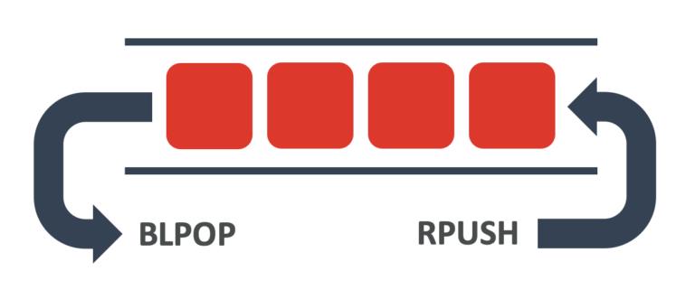
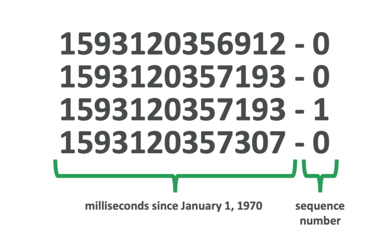
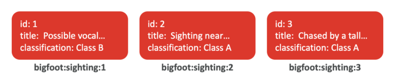

使用 Python 配合 Redis 超越缓存¶

本文由黄健宏翻译自 RedisLabs.com/blog ，首发于 blog.huangz.me 。
如果你是一位 Python 开发者， 那么你肯定使用过 Redis ， 并且认为它是一个很棒的缓存。 虽然你的印象没有错， Redis 的确是一个很棒的缓存， 但使用 Redis 能够解决的问题并不仅限于缓存。
我们将探索 Redis 和 Redis Enterprise 的一些其他用途。 为了找点乐子， 我将使用之前《使用 Redis 储存地理位置数据》一文中的大脚兽（Bigfoot）数据。 此外， 由于这篇文章的读者都是 Python 开发者， 所以我将使用 Python 来编写本文的所有代码！
我在接下来展示的代码中使用了 aioredis 客户端库，
因为它对 async/await 提供了非常棒的支持。
如果你对 async/await 不熟悉的话，
那么可以去看看这篇文章，
里面提到了 async/await 对提升性能的帮助。
使用 Redis 构建队列¶
Redis 提供了字符串、哈希、集合和列表等多种数据结构可供使用。 这些数据结构都是储存数据的好帮手， 其中列表就可以用作一个非常棒的队列（queue）。
为了将列表用作队列，
我们需要使用 RPUSH 将新项目推送至列表末尾，
然后使用 LPOP 或者 BLPOP 将它们从列表的前面弹出。
由于 Redis 对数据库的所有修改都是在单个线程里面完成的，
所以这些操作都是原子的。

作为例子， 下面这段在队列里面添加了一些大脚兽的踪迹。
1 import asyncio
2 import aioredis
3
4 async def main():
5
6 redis = await aioredis.create_redis('redis://:foobared@localhost:6379/0', encoding='utf-8')
7
8 await asyncio.gather(
9 add_to_queue(redis, 'Possible vocalizations east of Makanda'),
10 add_to_queue(redis, 'Sighting near the Columbia River'),
11 add_to_queue(redis, 'Chased by a tall hairy creature')
12 )
13
14 redis.close()
15 await redis.wait_closed()
16
17 def add_to_queue(redis, message):
18 return redis.rpush('bigfoot:sightings:received', message)
19
20 asyncio.run(main())
这个程序非常直接。
我们只需要在第 18 行调用 redis.rpush ，
就能够将指定的元素推入到队列。
接下来是从队列另一端读取元素的代码，
同样非常简单。
1 import asyncio
2 import aioredis
3
4 from pprint import pp
5
6 async def main():
7
8 redis = await aioredis.create_redis('redis://:foobared@localhost:6379/0', encoding='utf-8')
9
10 while True:
11 sighting = await redis.blpop('bigfoot:sightings:received')
12 pp(sighting)
13
14 asyncio.run(main())
第 11 行和第 12 行的无限循环将等待并且打印被推入至队列中的大脚兽踪迹。
这里使用了 redis.blpop 而不是 redis.lpop ，
因为前者可以阻塞客户端并等待列表中的元素返回。
比起让 Redis 和 Python 代码之间的网络无休止地轮询并做无用功，
让客户端阻塞并等待元素出现的做法会高效得多。
Redis 还有一些同样很酷的命令，
它们不仅可以将列表用作队列甚至堆栈。
我最喜欢的是 BRPOPLPUSH ，
它可以从列表的右侧阻塞并弹出一些元素，
然后将被弹出的元素推入到另一个列表。
你可以使用这个命令来将一个队列中的元素传递至另一个队列，
这是非常棒的一个命令。
使用 Redis 订阅和发送事件¶
Redis 提供的东西中有些并不是数据结构， 比如订阅与发布（Pub/Sub）特性就是其中之一。 这个特性就像它的名字一样， 是一个内置于 Redis 中的发布与订阅机制。 得益于这个特性， 我们只需要使用一些命令就可以在自己的 Python 应用里面添加强大的订阅与发布机制。
通过执行订阅操作可以让我们发现事件， 以下是代码：
1 import asyncio
2 import aioredis
3
4 from pprint import pp
5
6 async def main():
7
8 redis = await aioredis.create_redis('redis://:foobared@localhost:6379/0', encoding='utf-8')
9
10 [channel] = await redis.psubscribe('bigfoot:broadcast:channel:*')
11
12 while True:
13 message = await channel.get()
14 pp(message)
15
16 asyncio.run(main())
因为我想要接收所有跟大脚兽有关的消息，
所以我在这段代码的第 10 行使用 redis.psubscribe 订阅了一个 Glob 风格的模式，
通过使用 bigfoot:broadcast:channel:* 作为模式，
客户端将接收到所有以 bigfoot:broadcast:channel: 开头的事件。
用于匹配模式的 redis.psubscribe 函数和非模式匹配的 redis.subscribe 函数都返回 Python 列表，
以便包含不定数量的元素。
程序将解构这个列表（Python 的术语是解包）以获得我想要的通道，
并在之后使用 .get 进行阻塞调用以等待下一条消息。
发布事件非常简单， 下面是代码：
1 import asyncio
2 import aioredis
3
4 async def main():
5
6 redis = await aioredis.create_redis('redis://:foobared@localhost:6379/0', encoding='utf-8')
7
8 await asyncio.gather(
9 publish(redis, 1, 'Possible vocalizations east of Makanda'),
10 publish(redis, 2, 'Sighting near the Columbia River'),
11 publish(redis, 2, 'Chased by a tall hairy creature')
12 )
13
14 redis.close()
15 await redis.wait_closed()
16
17 def publish(redis, channel, message):
18 return redis.publish(f'bigfoot:broadcast:channel:{channel}', message)
19
20 asyncio.run(main())
这段代码的重点是第 18 行，
它使用了名字非常直接的 redis.publish 来讲消息发布至所需的通道。
值得注意的是， 发布与订阅是一个发送即遗忘机制（fire-and-forget）。 如果代码发布了一个事件但是却没有人监听， 那么该事件就会消失。 如果你想让自己的事件持续存在， 那么可以考虑使用前面提到的队列， 又或者接下来将要介绍的 Redis 流。
使用 Redis 储存数据流¶
除了发布与订阅之外， Redis 还可以使用流来发布和订阅事件。 Redis 流是一个非常大的话题， 但使用它只需要掌握少量命令。 从 Python 来看， 这些命令的用法都是非常简单的， 我将一一向你说明。
下面的代码将把三次大脚兽的目击事件添加到流里面。
1 import asyncio
2 import aioredis
3
4 async def main():
5
6 redis = await aioredis.create_redis('redis://:foobared@localhost:6379/0', encoding='utf-8')
7
8 await asyncio.gather(
9 add_to_stream(redis, 1, 'Possible vocalizations east of Makanda', 'Class B'),
10 add_to_stream(redis, 2, 'Sighting near the Columbia River', 'Class A'),
11 add_to_stream(redis, 3, 'Chased by a tall hairy creature', 'Class A'))
12
13 redis.close()
14 await redis.wait_closed()
15
16 def add_to_stream(redis, id, title, classification):
17 return redis.xadd('bigfoot:sightings:stream', {
18 'id': id, 'title': title, 'classification': classification })
19
20 asyncio.run(main())
这段代码中最重要的就是第 17 行和第 18 行，
它使用了 redis.xadd 函数将一次目击事件的字段添加到流里面。
每个新添加的流事件都有一个唯一标识符，
其中包含自 1970 年开始的时间戳（毫秒）和一个用破折号连接的序列号。
例如，
当我写这篇文章的时候，
1970 年 1 月 1 日（Unix纪元）午夜已经过去了 1,593,120,357,193 毫秒（1.59千兆秒）。
因此当我运行上面这段代码的时候，
命令将创建出 ID 为 1593120357193-0 的事件。

我们在添加事件的时候可以使用 * 来代替具体的 ID ，
这样 Redis 就会根据当前时间来自动生成事件的 ID ，
这也是 redis.xadd 函数的默认行为。
正如接下来的代码所示，
在读取流元素的时候，
我们需要设置一个起始 ID 。
你可以看到，
在第 10 行，
程序将变量 last_id 设置成了 0-0 ，
这个 ID 代表流的起始位置。
1 import asyncio
2 import aioredis
3
4 from pprint import pp
5
6 async def main():
7
8 redis = await aioredis.create_redis('redis://:foobared@localhost:6379/0', encoding='utf8')
9
10 last_id = '0-0'
11 while True:
12 events = await redis.xread(['bigfoot:sightings:stream'], timeout=0, count=5, latest_ids=[last_id])
13 for key, id, fields in events:
14 pp(fields)
15 last_id = id
16
17 asyncio.run(main())
程序的第 12 行使用 redis.xread 函数从流中请求最多 5 个 0-0 之后的事件。
该调用将返回一个列表，
然后程序将对其进行循环和解构，
以获得事件的字段和标识符。
事件的标识符会被储存起来，
以便将来调用 redis.xread 时可以获得新的事件并在有需要时重新读取之前读取过的旧事件。
将 Redis 用作搜索引擎¶
Redis 可以通过模块（Module）扩展来增加新的命令和功能。 有大量的模块可以用于 AI 模型服务、图形数据库、时间序列数据库以及本例中的搜索引擎。
RedisSearch 是一个强大的搜索引擎， 它摄取数据的速度快得惊人。 有些人喜欢用它来进行瞬时搜索， 但除此之外它也可以用来进行其他搜索。 下面是使用该模块的一个例子：
1 import asyncio
2 import aioredis
3
4 from pprint import pp
5
6 async def main():
7
8 redis = await aioredis.create_redis('redis://:foobared@localhost:6379/0', encoding='utf-8')
9
10 await redis.execute('FT.DROP', 'bigfoot:sightings:search')
11
12 await redis.execute('FT.CREATE', 'bigfoot:sightings:search',
13 'SCHEMA', 'title', 'TEXT', 'classification', 'TEXT')
14
15 await asyncio.gather(
16 add_document(redis, 1, 'Possible vocalizations east of Makanda', 'Class B'),
17 add_document(redis, 2, 'Sighting near the Columbia River', 'Class A'),
18 add_document(redis, 3, 'Chased by a tall hairy creature', 'Class A'))
19
20 results = await search(redis, 'chase|east')
21 pp(results)
22
23 redis.close()
24 await redis.wait_closed()
25
26 def add_document(redis, id, title, classification):
27 return redis.execute('FT.ADD', 'bigfoot:sightings:search', id, '1.0',
28 'FIELDS', 'title', title, 'classification', classification)
29
30 def search(redis, query):
31 return redis.execute('FT.SEARCH', 'bigfoot:sightings:search', query)
32
33 asyncio.run(main())
在第 12 和第 13 行，
程序使用 FT.CREATE 创建了一个索引。
索引需要描述程序将要添加的每个文档中的字段的模式。
在这个例子中，
程序需要添加大脚兽的目击事件，
该文档包含一个标题和一个分类，
并且它们都是文本字段。
在拥有了索引之后，
程序就可以向里面添加文档了，
这一操作发生在程序的第 27 行和第 28 行，
通过 FT.ADD 命令来完成。
每个文档偶读需要一个唯一 ID 、一个介于 0.0 和 1.0 之间的权重（rank）以及相应的字段。
正如程序的第 31 行所示，
在索引加载文档之后，
程序就可以使用 FT.SEARCH 命令和具体的查询语句来执行查询操作。
第 20 行的特定查询指示 RedisSearch 在索引中查找包含这些术语之一的文档。
在这个例子中，
该查询将返回两个文档。
使用 Redis 作为主数据库¶
Redis 可以作为一个速度奇快的内存存储数据库来使用。 下面的代码使用了哈希来演示这种用法。 哈希是一种非常棒的数据结构， 它可以建模你想要储存的记录类型， 并且能够将数据的主键用作键名的其中一部分。
1 import asyncio
2 import aioredis
3
4 from pprint import pp
5
6 async def main():
7
8 redis = await aioredis.create_redis('redis://:foobared@localhost:6379/0', encoding='utf-8')
9
10 await asyncio.gather(
11 add_sighting(redis, 1, 'Possible vocalizations east of Makanda', 'Class B'),
12 add_sighting(redis, 2, 'Sighting near the Columbia River', 'Class A'),
13 add_sighting(redis, 3, 'Chased by a tall hairy creature', 'Class A'))
14
15 sightings = await asyncio.gather(
16 read_sighting(redis, 1),
17 read_sighting(redis, 2),
18 read_sighting(redis, 3))
19
20 pp(sightings)
21
22 redis.close()
23 await redis.wait_closed()
24
25 def add_sighting(redis, id, title, classification):
26 return redis.hmset(f'bigfoot:sighting:{id}',
27 'id', id, 'title', title, 'classification', classification)
28
29 def read_sighting(redis, id):
30 return redis.hgetall(f'bigfoot:sighting:{id}')
31
32 asyncio.run(main())

你可能会这样想”如果我把服务器关掉了怎么办？如果它崩溃了怎么办？那我就什么数据都没有了！“
No，不会的！
你可以修改你的 redis.conf 文件，
用几种不同的方式来持久化内存中的数据。
此外，
如果你使用的是 Redis Enterprise ，
我们也有为你提供相应的解决方案，
使得你可以直接使用 Redis 而不必担心持久化的问题。
亲手尝试一下¶
为了方便你亲手尝试这些例子，
我把文中涉及的所有代码都放到了 GitHub 上面，
你可以克隆并开始使用它们。
如果你是 Docker 用户，
项目里面也有一个名为 start-redis.sh 的 shell 脚本，
它可以拉取一个镜像，
然后启动一个能够运行这些例子的 Redis 版本。
如果你在玩耍完毕之后想要认真地构建一些软件， 那么可以注册并尝试 Redis Cloud Essentials 。 它和你所熟悉和喜欢的 Redis 一样， 唯一的区别就是这种 Redis 由云端进行管理， 所以你只需要专注于构建你的软件即可。